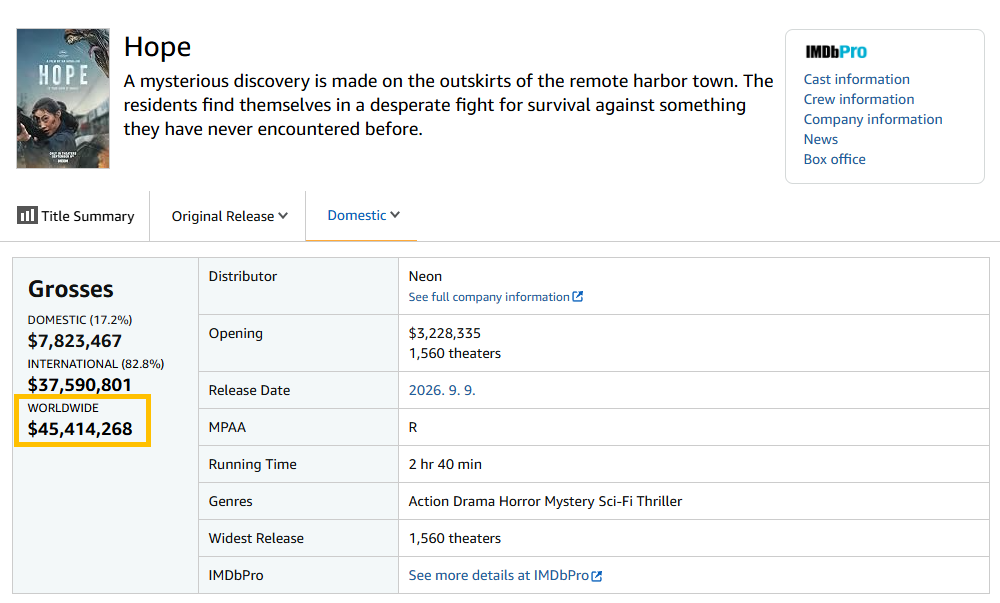
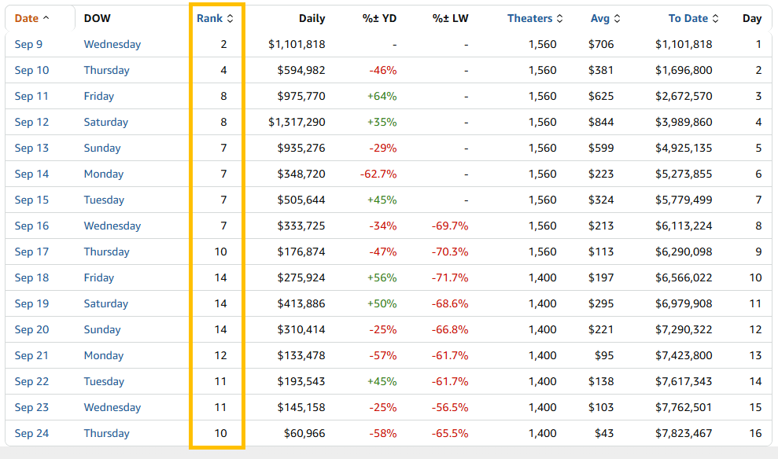

전세계 수익 4540만 달러 달성
한화로 610억원 남짓.
마케팅 비용까지 포함한 총제작비가 대략 7~800억으로 알려졌으니,
손익분기점도 달성 실패.

북미 시장 개봉 현황.
박스오피스 14위까지 밀렸다가 현재는 10위로 다시 올라옴.
그러나 상영관당 수익률(Avg.)는 첫날 706$에서 43$까지 떨어짐.
최종 흥행 성적 또한 현재 데이터에서 크게 달라지지 않을 것으로 보임
손익분기점 달성 실패 유력.
나만 당할수없으니 재밋다고 하고다님